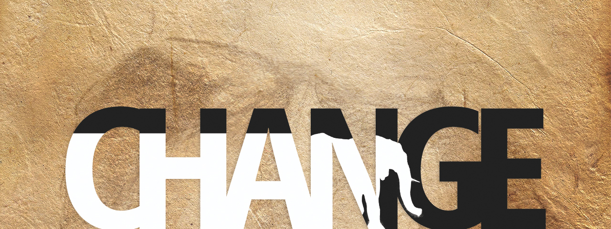

The journey begins with an African elephant: every year she followed in the footsteps of her herd along the long migration routes to water, until one dry season when all the footprints had faded away, and she had to find her own way across a sea of sand.
Kick-off an Indie Project
I think I started an indie art studio. I started to figure out — to put into practice, and here into words — what it means to start a studio: I started the year with no day job and I have purchased high-performance computer hardware and have licensed animation and design software so that I may produce commercial art, which in turn may foster support for wildlife conservation.
An education in information technology (IT), then a profession of technical animation – each commanded an appreciation for the underlying architecture of the software tools that enable artists to create art on the computer. An artist at heart sees the lines between practical and inspirational resources become blurred – pixelated – in the digital space. For example, a Wacom® tablet is a beautiful thing. I have used a Wacom® tablet almost every day since 2010 to create the art that I love.* Like a contribution made in support of an inspiring artist or work of art, an investment in a computer graphic studio suite has been a price that I have justified in pursuit of that which has inspired me. My first few years working professionally have helped to fund this studio overhead, with the added benefit of some perspective to take on this challenge: to start-up. I enjoyed being part of a small animation team, forerunning an in-house design team, as well as bouncing ideas around with the development and the marketing teams, however, I regretted too often that the applications we made may have better communicated the uniquely interactive capacity of the technology that the company was challenged – and positioned – to pioneer.
Indie projects are the opposite of a glossy commercial product; they represent a single, personal vision. When our focus shifts from serving a mass-audience to the individual experience, we encourage vulnerabilities within the art form that allow connection with an audience on a personal level. My passion is wildlife art, and I believe that illustrating beauty in nature through the lens of interactive media can give rise to an unprecedented voice in support of wildlife conservation.

And so I'm illustrating a journey with an elephant — for elephants, for everyone.
A small team have volunteered time and talent to help me tell her story. Simply, a developer to write the code and a singer-songwriter to write the score. Namely, formerly lead developer at Current Labs: Mai El-Awini has contributed key creative input from an early stage, as the project developed from an animation to an interactive application, or app. And the piano and the rest of the score that relates so much of the emotion and progression of the character in motion-picture is to be written by Brianna Clarke, recorded for the original animation and with a revised edit to be modularized and integrated in the final app.
Showcasing elephants in this interactive capacity only comes with the commitment of people behind the scenes, and with still more costs than hardware, software, time and energy. But ideally, any revenue from published art of elephants is dedicated to funding the conservation of elephants in the wild. So, crowdfunding a piece of this project may create an opportunity to reward the effort of the artists – as well as to further the story for elephants, for everyone. The idea is to invite people to champion the project — to ask people to pre-order a copy of a digital or printed edition of the White Elephant comic book and in so doing fund a limited edition print run. A small surplus of copies may create an opportunity to balance project costs. They say you have to build a crowd first before you can crowdfund a dream, so I have kicked-off a project broadcast and invite everyone interested in art and design, and elephants to get behind the scenes in wildlife art.
“If you have an idea, and it’s a passion of yours, and you need money to bring that idea to life, […] Kickstarter allows you to fund that by attracting people who share that dream with you, and who donate money to your project so that that dream can come to life.” — Richard Bliss. (2011) Fund the Dream on Kickstarter e/1. Funding the Dream on Kickstarter.
If you search: how to fund a dream, you may quickly come across Kickstarter and if that company name sounds synonymous with crowdfunding to you, it is because Kickstarter is to online crowdfunding what Kleenex is to tissue paper. Online platforms are now more than ever accessible to artists — to share project goals, along with a series of rewards, so that anyone with that common interest may pledge to help realize those goals. Richard Bliss, host of the podcast Fund the Dream, perhaps best summed up what Kickstarter is all about all the way back in episode one as he described it: “angel funding for micro-sites.”
I have personally backed several projects on Kickstarter and have been rewarded with authentic connections to passionate artists who are so clearly burning the candle at both ends to make a dream come true. I was admittedly curious about the consumer experience as well, and it may be a good platform for the limited edition print run of a White Elephant comic book. Kickstarter handles the project information while Amazon handles the financial transaction, and between the two they cut out about ten percent of the revenue generated if, and only if, the project reaches its funding goal. It’s an all-or-nothing kind of deal.
Three million people pledged $480 million to projects on Kickstarter in 2013; see the highlights, here. And so I started thinking through my own fund the dream story: with your pledge you've helped me help wildlife helpers help wildlife&elipse; scratch that – with your pledge, you’ve helped raise awareness for a graphic campaign to change the way we look at wildlife — elephants, specifically, this time; specifically elephants this time.
Okay, for now – We journey on with an elephant.
* Gifted to me by my grandmother Millie, along with so much more.